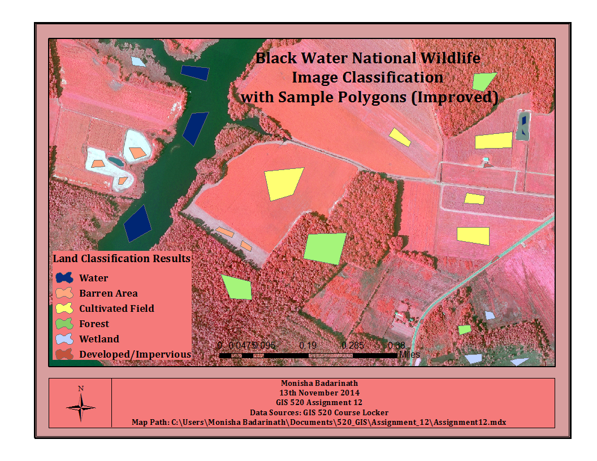

Intro to Remote Sensing
Today we'll talk about remote sensing, what it can do, and how to do it
DISCLAIMER: I am not an expert
So, what is Remote Sensing anyway?
Use of aerial sensor technologies (special cameras) to detect and classify objects on Earth by means of propagated signals (e.g. electromagnetic radiation)
Visible light is one type of electromagnetic radiation, other forms are X-rays and Radio Waves.
A brief history of Remote Sensing
First, there was aerial photography (via balloons)
Not useful for making maps
Next came planes and satellites w/ sensors attached
Satellites can capture more than just visible light
infrared!
thermal!
Satellites are equipped with bands to measure electromagnetic waves
Some bands measure visible light, and some measure infrared
Bands can be combined into the RGB display on a monitor to show information that is outside the spectrum of visible light
resize browser for next slide
Let's define some terms
Spatial Resolution: Size of a pixel that is recorded (1 px = 1 m)
Spectral Resolution: Wavelength width of each band (e.g. 0.10 to 0.11 μm per band)
Temporal Resolution: Frequency of flyovers (1 image every 30 days)
LANDSAT 8: - 30 meter resolution
- 11 bands btwn 0.43-12.51 μm
- 16 day temporal resolution
Each pixel has a Digital Number value (0-255)
When 3 DNs combine on a RGB monitor, it displays a color
Digital Numbers- 0,0,0 is black
- 255,255,255 is white
Areas of similar land cover emit similar electromagnetic waves
and therefore have similar DN values
Classification is a technique used to categorize all pixels into land cover classes
Two types of classification- •Supervised Classification
- •Unsupervised Classification
These techniques group pixels of similar value to show land use
Unsupervised Classification- User specifies number of classes and pixels are automatically grouped into clusters of similar DN value
Supervised Classification- User selects representative samples for each land cover class, called Training Sites
The computer uses Training Sites to classify every other pixel in the image
